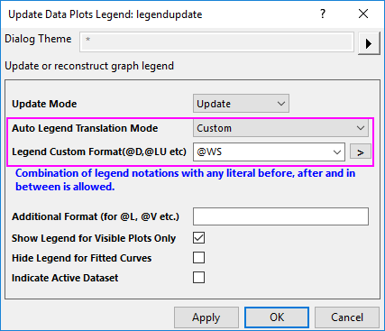
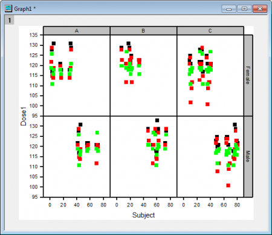

Diagramm erstellen
Create-Graph
Zusammenfassung
Origin verfügt über eine Vorlagenbibliothek. Sie können Vorlagen modifizieren oder Ihre eigenen erstellen und sie zu der Sammlung hinzufügen. Das Erstellen eines Diagramms in Origin ist sehr einfach, indem erst die gewünschten Daten und dann eine Vorlage aus einem Menü oder den Diagrammsymbolleisten ausgewählt wird. Der Dialog Diagrammeinstellungen bietet mehr Flexibilität beim Erstellen von Zeichnungen wie dem Zeichnen von Daten aus mehreren Mappen oder Blättern.
Seit Origin 2016 gibt es die leistungsstärkere "klonbare" Vorlage. Diese Vorlagen wurden für das sogenannte "Intelligente Zeichnen" entwickelt. Dies bedeutet, dass Sie ein Diagramm mit einer komplizierten Layerhierarchie oder mit Quelldaten, die nicht über einfache Auswahl festgelegt werden können, klonen können. In diesem Tutorial zum Zeichnen mit benutzerdefinierten Diagrammvorlagen wird erläutert, wie sowohl Standard- als auch klonbare Vorlagen gespeichert und verwendet werden können.
Was Sie lernen werden
Dieses Tutorial zeigt Ihnen, wie Sie:
- Daten in einem Arbeitsblatt auswählen und schnell ein Diagramm erstellen,
- die X/Y-Eingabe der Datenzeichnung mit dem Kontextmenü ändern,
- Daten zu einem vorhandenen Diagramm hinzufügen oder entfernen,
- mit dem Dialog Diagrammeinstellungen Daten aus mehreren Blättern zeichnen,
- Diagrammgruppen mit Beschriftung zeichnen.
Zeichnung direkt durch Auswählen der Daten erstellen
- Klicken Sie auf die Schaltfläche Mit mehreren Dateien verbinden , um den Dialog des Konnektors zu öffnen. Um mehrere ASCII zu importieren, wählen Sie CSV unter Datenkonnektor.
- Klicken Sie auf die Schaltfläche ... neben dem Bearbeitungsfeld Dateinamen. Wählen Sie die Dateien S15-125-03.dat, S21-235-07.dat und S32-014-04.dat im Verzeichnis \Samples\Import and Export\ aus und klicken Sie auf Hinzufügen, um diese drei Dateien zu dem Bedienfeld unten hinzuzufügen. Klicken Sie auf OK, um sie zum Bearbeitungsfeld Dateinamen hinzuzufügen.
- Aktivieren Sie das Kontrollkästchen Gleiche Mappe.
- Klicken Sie auf OK. Die importierten Ergebnisse sollten folgendermaßen aussehen:
- Aktivieren Sie das dritte Arbeitsblatt S32-014-4. Um ein Diagramm mit drei Layern zu erstellen, markieren Sie die drei Y-Spalten Delta Temperature, Magnetic Field und Position und wählen dann Zeichnen > Mehrere Felder/Achsen: 3Y, Y-YY. Hinweis: Es ist nicht notwendig, die Spalte Time zu markieren, da Origin die Y-Spalten automatisch gegen die verbundene X-Spalte in dem Arbeitsblatt zeichnet.

X/Y-Daten der Zeichnung ändern
Verwenden Sie das gleiche Arbeitsblatt wie aus dem vorherigen Beispiel.
- Markieren Sie Spalte B und klicken Sie auf die Schaltfläche Linie
 , um ein Liniendiagramm zu erzeugen.
, um ein Liniendiagramm zu erzeugen.

- Klicken Sie mit der rechten Maustaste auf das Diagramm und führen Sie den Cursor im Kontextmenü auf Y ändern. Wählen Sie dann Spalte C (Magnetic Field) im Ausklappmenü.
- Möglicherweise wird Ihnen eine Erinnerungsmeldung zur Neuskalierung des Diagramms angezeigt, um alle Daten zu zeigen. Wählen Sie Ja und klicken Sie auf OK, so dass die aktualisierte Zeichnung automatisch skaliert wird.
- Die Zeichnung sollte aktualisiert folgendermaßen aussehen:
 |
Mit diesem Kontextmenü können Sie die X- oder Y-Daten der aktuellen Zeichnung in eine andere Spalte im aktuellen Projekt verschieben. Diese Spalte kann eine beliebige Spalte sein, die nicht die aktuelle X- oder Y-Datenspalte ist, unabhängig von der Spaltenzuordnung. Wählen Sie im Menü Spalte auswählen, um Spalten aus dem aktuellen Ordner bzw. Projekt festzulegen.
Sie können auch das Kontextmenü Arbeitsblatt ändern verwenden, um die aktuellen X- und Y-Daten zu ändern, so dass sie den Spalten mit dem gleichen Spaltenindex in einem anderen Arbeitsblatt der aktuellen Arbeitsmappe entsprechen, unabhängig von der Spaltenzuordnung und dem Spaltenkurzname.
|
Hinweis: Sie können die Dialoge Layerinhalt oder Diagrammeinstellungen verwenden, um die Eingabedaten zu ändern.
Daten zu einem vorhandenen Diagramm hinzufügen und Legende aktualisieren
Mit Drag&Drop
- Wechseln Sie zurück zur Mappe mit den drei verschiedenen Datenblättern aus dem obenstehenden Beispiel.
- Markieren Sie die Spalte Delta Temperature (Spalte B) auf dem ersten Blatt und wählen Sie dann Zeichnen: Einfache 2D: Liniendiagramm, um ein Liniendiagramm zu erzeugen.
- Gehen Sie zurück zur Arbeitsmappe. Wählen Sie für jedes der verbliebenen Blätter die Spalte Delta Temperature und positionieren Sie den Cursor am Rand der Spalte, bis der Cursor folgendermaßen angezeigt wird:
 .
.
- Sie können die Spalte dann mit Drag&Drop auf die Diagrammseite ziehen. Dem aktuellen Layer wird eine weitere Kurve hinzugefügt.

- Nach Hinzufügen der anderen Kurven erweitern Sie das Bedienfeld Objektverwaltung, das standardmäßig oben rechts im Origin-Arbeitsbereich befestigt ist (Sie können das Menü Ansicht: Objektverwaltung verwenden, um sie ggf. neu zu laden). Klicken Sie mit der rechten Maustaste auf die letzte Zeichnung unter Layer1, um Als Gruppenende festlegen auszuwählen und so die drei Kurven zu gruppieren.
- Durch das Gruppieren der Diagramme können Sie schnell präsentationsreife Grafiken erstellen, da jede Auswahl in der Gruppe andere Attributeinstellungen besitzt (Linienfarbe = schwarz, rot, grün...; Symbolform = Quadrat, Kreis, Dreieck... usw.).
- Wählen Sie Grafik: Legende: Legende aktualisieren, um den Dialog der X-Funktion legendupdate zu öffnen. Legen Sie den Übersetzungsmodus der Autom. Legende auf Benutzerdefiniert fest. Geben Sie @WS für Benutzerdefiniertes Legendenformat ein.

- Klicken Sie auf OK. Die Legende enthält jetzt den Arbeitsblattnamen für jede Datenzeichnung.

-
|
Der Standarddiagrammtyp des Drag&Drop-Diagramms ist Aktuell, das dem aktuell aktiven Diagramm entspricht. Sie können die Standardoption jedoch ändern. Dazu klicken Sie auf Einstellungen: Optionen, wechseln zur Registerkarte Grafik und ändern die Einstellung der Auswahlliste Drag&Drop-Diagramm.
|
Mit der Minisymbolleiste Kopieren zum Zeichnen
In diesem Abschnitt verwenden wir die Minisymbolleiste Zum Zeichnen kopieren, um neue Zeichnungen zu einem existierenden Diagramm hinzuzufügen.
- Wechseln Sie zurück zur Mappe mit den drei verschiedenen Datenblättern aus dem obenstehenden Beispiel.
- Markieren Sie die Spalte Delta Temperature (Spalte B) auf dem ersten Blatt S15-125-03 und wählen Sie dann Zeichnen: Einfache 2D: Liniendiagramm, um ein Liniendiagramm zu erzeugen.
- Gehen Sie zurück zur Arbeitsmappe. Aktivieren Sie das zweite Blatt S21-235-07. Markieren Sie die Spalte Delta Temperature, und eine Minisymbolleiste wird angezeigt. Klicken Sie auf die Schaltfläche Zum Zeichnen kopieren.

- Aktivieren Sie das Diagrammfenster und drücken Sie Strg+P, um die kopierten Spaltendaten als eine Linienkurve in den aktuellen Layer zu zeichnen.
- Für das restliche Blatt S32-014-04 wiederholen Sie den Prozess von Kopieren und Einfügen des Datensatzes in das existierende Diagramm, um die neue Linie der Delta Temperature aus S32-014-04 hinzuzufügen.
Mit Dialog Layerinhalt
Der Dialog Layerinhalt wird in erster Linie zum Hinzufügen und Entfernen von Datenzeichnungen aus dem Diagrammlayer genutzt. Seit Origin 2016 können Sie Layer ohne Schließen des Dialogs wechseln, wodurch es leichter wird, Zeichnungen zu oder aus einem Diagramm mit mehreren Layern hinzuzufügen bzw. zu entfernen. Um dies zu erläutern, kehren wir zu dem Diagramm mit 3 Layern zurück, das wir in der ersten Übung dieses Tutorials erstellt haben:

In der ersten Übung zeichneten Sie Daten aus Blatt S32-014-04. In dieser Übung werden die Daten aus Blatt S32-014-04 mit den Daten aus Blatt S21-235-07 getauscht.
- Klicken Sie mit der rechten Maustaste auf das Symbol von Layer 1 in der oberen linken Ecke des Diagrammfensters und wählen Sie Inhalt Layer.
- Klicken Sie in dem aufgerufenen Dialog auf die Auswahlliste in der oberen linken Ecke und wählen Sie Arbeitsblätter im Ordner.
- Klicken Sie mit der rechten Maustaste auf die Überschriften des linken Bedienfelds, löschen Sie den Mappenname und wählen Sie Blatt (wenn dies nicht bereits angezeigt wird), so dass Sie sehen können, welche Arbeitsblätter welche Arbeitsmappendatensätze enthalten. Klicken Sie dann auf die Überschrift Blatt, um die Datensätze nach Blattname zu sortieren.
- Wählen Sie in dem rechten Bedienfeld des Dialogs Layerinhalt Delta Temperature aus dem Blatt S32-014-04 und klicken Sie auf die Schaltfläche Zeichnung entfernen
 , um die Zeichnung aus dem Diagrammlayer 1 zu entfernen.
, um die Zeichnung aus dem Diagrammlayer 1 zu entfernen.
- Wählen Sie im linken Bedienfeld Delta Temperature aus dem Blatt S21-235-07 und klicken Sie auf die Schaltfläche Zeichnung hinzufügen
 . Klicken Sie dann auf Anwenden, um die neue Zeichnung zu Layer 1 hinzuzufügen. Sie haben jetzt einen Datensatz mit einem anderen ausgetauscht.
. Klicken Sie dann auf Anwenden, um die neue Zeichnung zu Layer 1 hinzuzufügen. Sie haben jetzt einen Datensatz mit einem anderen ausgetauscht.
- Klicken Sie auf die Schaltfläche Layer(1) oben im Dialog und wählen Sie Layer wechseln > 2. Layer 2.
- Wiederholen Sie den Prozess des Entfernens des bestehenden Datensatzes Magnetic Field aus Layer 2 und ersetzen Sie ihn mit dem Datensatz Magnetic Field aus Blatt S21-235-07. Klicken Sie dann auf Anwenden.
- Klicken Sie auf die Schaltfläche Layer (2) und wählen Sie Layer wechseln > 3. Layer 3. Wiederholen Sie den Prozess, den Datensatz Position im Blatt S32-014-04 mit dem Datensatz Position im Blatt S21-235-07 zu tauschen. Klicken Sie dann auf Anwenden und schließen Sie den Dialog.

Zeichnung mit Hilfe des Dialogs Diagrammeinstellungen erstellen
Der Dialog Diagrammeinstellungen ist für eine Reihe von Zeichenaufgaben, einschließlich dem Erstellen von Diagrammen, Verändern des Diagrammtyps, Hinzufügen und Entfernen von Zeichnungen zum oder aus dem Diagramm, Gruppieren oder Auflösen von Gruppierungen und Bearbeiten des Zeichenbereichs, nützlich.
- Wechseln Sie zurück zu Ihrer Arbeitsmappe und stellen Sie sicher, dass keine Daten ausgewählt sind. Es ist nicht wichtig, welches Arbeitsblatt aktiv ist; wichtig ist, dass keine Spalten markiert sind.
- Wählen Sie Zeichnen > Mehrere Felder/Achsen: 4-fach im Menü. Ohne ausgewählte Daten öffnet Origin den Dialog Diagrammeinstellungen, mit dem Sie die Daten wählen können, die sie zeichnen möchten.
- Erweitern Sie das obere Bedienfeld durch Klicken auf die Schaltfläche
 . Halten Sie die Strg-Taste gedrückt, um die drei Arbeitsblätter zu markieren. Alternativ können Sie einfach auf Ihre Auswahl klicken und sie dann ziehen, so dass alle drei Arbeitsblätter markiert werden.
. Halten Sie die Strg-Taste gedrückt, um die drei Arbeitsblätter zu markieren. Alternativ können Sie einfach auf Ihre Auswahl klicken und sie dann ziehen, so dass alle drei Arbeitsblätter markiert werden.
- Im mittleren Bedienfeld werden gemeinsame Spalten aller drei Blätter angezeigt. In diesem Fall haben alle drei Blätter ähnliche Daten mit entsprechenden Spaltennamen. Klicken Sie auf die Schaltfläche
 oben rechts in diesem Bedienfeld, um die verfügbaren Diagrammspalten mt einem ähnlichen Spaltenlangnamen in einer Liste zu zeigen. Dieser Modus ist einfacher, da Sie die Kontrollkästchen X- und Y-Zuweisung nicht aktivieren müssen.
oben rechts in diesem Bedienfeld, um die verfügbaren Diagrammspalten mt einem ähnlichen Spaltenlangnamen in einer Liste zu zeigen. Dieser Modus ist einfacher, da Sie die Kontrollkästchen X- und Y-Zuweisung nicht aktivieren müssen.
- Öffnen Sie das untere Bedienfeld des Dialogs, die Diagrammliste, wenn es nicht bereits zu sehen ist. Layer 1 ist markiert. Wählen Sie Delta Temperature im mittleren Bereich und klicken Sie dann auf die Schaltfläche Hinzufügen. Da Sie bereits die drei Arbeitsblätter in Schritt 3 ausgewählt haben, werden alle Spalten Delta Temperature aus jedem der drei Arbeitsblätter zu Layer 1 hinzugefügt.
- Wiederholen Sie diese Schritte, um alle Spalten Magnetic Field und Position jeweils zu Layer 2 und Layer 3 hinzuzufügen.
Beachten Sie, dass in jedem Layer die drei Diagramme automatisch gruppiert werden.
- Klicken Sie auf die Schaltfläche OK, um das Diagramm zu erstellen.
- Sie werden bemerken, dass die Standardlegende, die für jeden Layer erstellt wurde, nicht besonders hilfreich ist. Das Diagrammlegendenobjekt von Origin kann in hohem Maß benutzerdefiniert angepasst werden. Bevor wir also fortfahren, werden wir die Standardlegende modifizieren. Klicken Sie mit der rechten Maustaste auf das Legendenobjekt und wählen Sie Legende: Legende aktualisieren im Kontextmenü.
- Nehmen Sie im aufgerufenen Dialog die gleichen Einstellungen vor wie in Schritt 8 des Abschnitts Mit Drag&Drop. Beachten Sie, dass die Syntax für das Benutzerdefinierte Legendenformat @WS die LabTalk-Substitutionsnotation für den Namen des Arbeitsblatts ist, das die Daten für jedes Liniendiagramm enthält.
- Sie haben einen zusätzlichen (leeren) Layer auf der Diagrammseite. Um diesen Layer zu löschen, klicken Sie einmal zum Auswählen auf ihn und drücken Sie dann die Taste Entf auf der Tastatur. Seien Sie vorsichtig, nicht auch das Diagrammfenster zu löschen, da dies im nächsten Abschnitt dieses Tutorials benötigt wird.

|
In dem obigen Diagramm ist die Legende für jeden Layer die gleiche. Sie können zwei von ihnen löschen. Oder nehmen Sie die untenstehenden Einstellungen im Dialog Legend Update vor, um nur eine Legende für das gesamte Diagrammfenster anzuzeigen.
Sobald die Einstellungen angewendet werden, können Sie die Strg-Taste drücken und doppelt auf den Legendentext klicken, um weitere direkte Bearbeitungen vorzunehmen; oder Sie können mit der rechten Maustaste auf das Legendenfeld klicken, um Eigenschaften im Kontextmenü auszuwählen und eine weiterführende Bearbeitung im Dialog Textobjekt vorzunehmen.
|
Gruppierte Daten zeichnen als
Wenn Ihre Daten eine Spalte mit kategorialen Daten enthalten oder mehrere Spalten eine Art geschachtelte Teilgruppierung der Daten darstellt, wie unten zu sehen,
dann möchten Sie Ihre Daten womöglich folgendermaßen zeichnen:
Trellis-Diagramm
Ab Origin 2017 kann mit Origin ein Trellis-Diagramm erstellt werden, das einen Layer mit den M X N Feldern besitzt.
- Öffnen Sie eine neue Arbeitsmappe.
- Öffnen Sie ein leeres Arbeitsblatt. Wählen Sie Hilfe: Ordner öffnen: Sample-Ordner ... im Menü, um den Ordner "Samples" zu öffnen. Öffnen Sie in diesem Ordner den Unterordner Statistics. Dort befindet sich die Datei 2010.dat. Ziehen Sie diese Datei per Drag&Drop in das leere Arbeitsblatt, um sie zu importieren.
- Markieren Sie col(H)~col(J) und wählen Sie im Menü Zeichnen > Kategorial: Trellis-Diagramm. Der Dialog plot_group wird geöffnet. Wählen Sie die Spalte col("City") als horizontale Gruppenvariable und die Spalte col("Gender") als vertikale Gruppenvariable für die Felder.
- Klicken Sie auf die Schaltfläche OK, um das Diagramm zu zeichnen. Klicken Sie auf die X-Achse und in der angezeigten Minisymbolleiste auf die Schaltfläche Achsenskalierung
 . Setzen Sie in dem Dialog, der geöffnet wird, die Werte für Von und Bis der horizontalen Achse auf -10 und 90. Sie erhalten das Diagramm unten:
. Setzen Sie in dem Dialog, der geöffnet wird, die Werte für Von und Bis der horizontalen Achse auf -10 und 90. Sie erhalten das Diagramm unten:

Wie Sie sehen können, verfügt dieses Trellis-Diagramm nur über einen Layer mit jedoch sechs Feldern (2×3): 2 Zeilen stellen die Variable "Gender" dar, Female und Male; drei Spalten repräsentieren die Variable "City", A, B und C.
Gruppiertes Boxdiagramm
Neben dem Trellis-Diagramm können Sie auch diese Art von Daten als ein gruppierte Box-/Säulendiagramm zeichnen.
- Aktivieren Sie erneut das Quellarbeitsblatt oben. Markieren Sie die Spalte col("Salary") und wählen Sie im Menü Zeichnen > Kategorial: Gruppierte Boxdiagramme, Index, um den Dialog plot_gdoxindexed aufzurufen. Wählen Sie col("Gender") und col("City") als Gruppenspalten.
- Klicken Sie auf die Schaltfläche OK, um das Diagramm zu zeichnen.

-
Zu sehen ist, dass die Daten in col("Salary") als ein gruppiertes Boxdiagramm gezeichnet wurden: zwei Gruppen nach "Gender", Female and Male; innerhalb dieser zwei Gruppen dann drei Teilgruppen nach "City", A, B und C.
Diagramme nach Beschriftung zeichnen
Origin bietet eine neue Zeichenoption Mehrfach nach Beschriftung, mit der es möglich ist, ein Diagramm mit mehreren Layern zu erstellen, wobei jeder Layer mehrere Zeichnungen mit der gleichen Beschriftung enthält.
- Öffnen Sie die Datei Samples\Graphing\Automobile Data.ogw (Hinweis: Stellen Sie sicher, dass Ihr Filter zum Öffnen von Dateien auf Arbeitsmappen(*.ogw)) festgelegt ist.
- Klicken Sie auf die obere linke Ecke des Arbeitsblatts, um das gesamte Blatt zu markieren. Wählen Sie Zeichnen > Mehrere Felder/Achsen: Mehrfach nach Beschriftung, um den Dialog plotbylabel zu öffnen.
- Legen Sie die Dialogoptionen, wie folgt, fest und klicken Sie auf die Schaltfläche OK, um das Diagramm zu erstellen.
Das Diagramm sollte folgendermaßen aussehen: